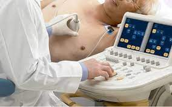

O serviço dispõe de modernos equipamentos para diagnóstico da estrutura e do funcionamento do coração baseados no uso de ultrassom, ou seja, as ondas acústicas com frequência de mais de 20 mil Hz (ciclos por segundo), geralmente em torno de 2 a 4 MegaHertz (MHz).
A ecocardiografia apresenta imagens estáticas e em movimento do músculo e das valvas cardíacas, além disso, através do mapeamento de fluxos em cores pela técnica Doppler, podemos identificar a direção e velocidade do fluxo sanguíneo no interior das cavidades cardíacas.
A equipe é composta por médicos altamente qualificados e está capacitada para oferecer desde os mais simples diagnósticos e tratamentos, até o atendimento de situações de maior risco e complexidade, contando com toda a infraestrutura do hospital, como Centro Cirúrgico, Unidade de Terapia Intensiva, Internação e Centro de Diagnóstico.
Natural de Jacobina- Ba.